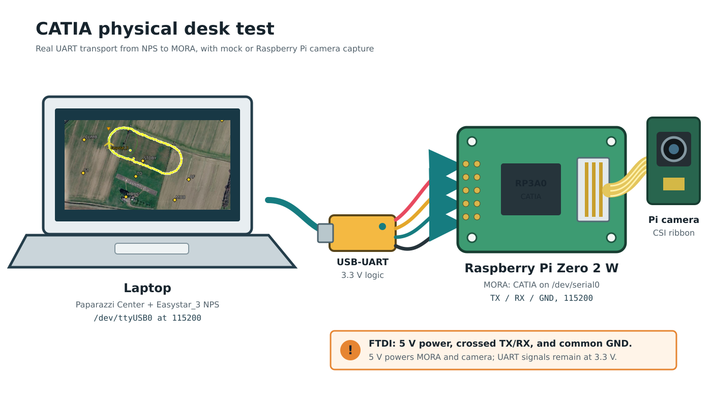

CATIA Camera Pipeline
CATIA in full the Camera Application Triggering Image Analysis application runing on > a companion board which has a camera connected. As soon as CATIA receives a 'take photo now' command from the Flightcontroller , camera obtains a JPEG image of current view, adds flight metadata like attitude and more to the EXIF data in the image > and passes the finished image to SODA. for more image data extraction .
Doc Maintainers: edit this README.md, catia-flow.dot, or
desk-test-setup.svg, then run ./update-documentation.sh. The rendered PNGs,
flow SVG, and HTML page are generated files.

Open the standalone HTML guide
Start Here: Local Simulation
This is the simplest way to verify the complete chain without camera hardware. Run these commands from the Paparazzi repository root.
1. Build CATIA
make -C sw/airborne/modules/digital_cam/catia
2. Start the local camera service
sw/airborne/modules/digital_cam/catia/run_local_demo.sh
The script builds CATIA, creates the local serial bridge, and starts CATIA with
the bundled mock image. It also enables --debug. Leave this terminal running
while NPS is running.
The important startup line is:
Started OK
CATIA and a Simulated Flight of Paparazzi aircraft may start in either order. The simulation UART retries while
/tmp/catia-sim is absent and reconnects automatically after CATIA is stopped
and started again. This allows CATIA sourcecode to be changed, then rebuilt, redeployed and restarted without even the need interrupting a running simulation.
3. Trigger a photo from Paparazzi
Start the aircraft simulation and trigger DC_SHOOT, for example through the
camera flight-plan block. Simulation sends the shot index, position, altitude
attitude, speed, and course to CATIA.
For every completed capture, CATIA prints debug info is enabled:
Photo take 6
The corresponding local images somewhere like:
sw/airborne/modules/digital_cam/catia/photos/m000006.jpg
4. Confirm the complete chain
A healthy local capture ends with messages similar to:
Shooting: got image .../photos/m000006.jpg
Shooting: EXIF metadata added
Photo take 6
SODA: I looked at the image. Cool, right?
Shooting: soda return 0 ...
Stop CATIA with Ctrl+C. CATIA also stops the local socat bridge that it
created.
Start Here: Physical Desk Test With MORA
Use this setup to test the deployed CATIA binary on for example a Raspberry Pi Zero 2 W while Simualtion runs on a local PC. The USB-to-UART link carries the exact same MORA camera messages used by the aircraft. When MORA (Magic Onboard Recognition Apparatus) is mentioned, it's the Computer Board with a camera.

1. Connect the desk hardware
- Connect the Raspberry Pi camera to MORA with its CSI ribbon cable and validate it works
- Connect a 3.3 V logic USB-to-UART adapter to the laptop.
- Cross the UART data lines: adapter TX to MORA RX, and adapter RX to MORA TX.
- Connect adapter GND to MORA GND.
- Connect the FTDI cable 5 V power output to MORA's 5 V input. The FTDI supply must provide enough current for the Raspberry Pi Zero 2 W and its camera. Do not connect the adapter's 3.3 V power output; 3.3 V refers only to UART signal levels in this setup.
On the local PC the adapter device is likely /dev/ttyUSB0. On MORA, CATIA uses the
/dev/serial0 device. Both ends run at 115200 baud. The example Easystar_3 simulated airframe
already configures these local PC-side settings. See the
<module name="digital_cam_uart"> block of the airframe.
2. First run: real UART with a mock image
Start CATIA from the laptop and keep the SSH terminal open:
ssh -t air@theatre \
'exec /home/air/digital_cam/catia --debug --mocktransform --test'
This first run exercises the physical UART, MORA framing, attitude transform, EXIF metadata, and SODA while keeping the physical camera out of the test. Wait for:
CATIA: serial device: /dev/serial0
Started OK
CATIA DEBUG: waiting for MORA camera messages on /dev/serial0
Start Easystar_3 NPS on the laptop and trigger DC_SHOOT. A successful shot
progresses through these diagnostics:
received MORA frame start
accepted MORA message id 1
photo trigger received
Shooting: got image ...
Shooting: EXIF metadata added
Shooting: soda return 0 ...
Inspect the generated images from another laptop terminal:
ssh air@theatre 'ls -lh /home/air/digital_cam/photos/m*.jpg'
3. Second run: Raspberry Pi camera
Stop the mock-image run with Ctrl+C, then start CATIA with the physical camera:
ssh -t air@theatre \
'exec /home/air/digital_cam/catia --aicam --debug'
Trigger another DC_SHOOT. Physical-camera images are written as
/home/air/digital_cam/photos/aNNNNNN.jpg before EXIF and SODA processing
completes.
4. Third run: Tiny 1-C LWIR camera
Connect the Tiny 1-C USB camera and start CATIA with the LWIR backend:
ssh -t air@theatre \
'exec /home/air/digital_cam/catia --lwircam --debug'
Trigger DC_SHOOT again. CATIA starts the deployed sample executable in
one-shot mode, waits for a usable thermal frame, and writes a numbered JPEG as
/home/air/digital_cam/photos/lNNNNNN.jpg. CATIA then inserts the same flight
EXIF metadata used by the other camera backends and invokes SODA.
A successful capture includes these diagnostics:
CATIA-N: requesting image from lwircam backend
selected camera index=0 vid=0bda pid=5840 name=USB Camera
LWIR CAPTURE: saved /home/air/digital_cam/photos/l00000N.jpg (256x192)
CATIA-N: Shooting: EXIF metadata added
CATIA-N: Shooting: soda return 0 ...
The deployment script installs a udev rule for USB device 0bda:5840. The
vendor SDK needs read/write access to the raw /dev/bus/usb/... node in
addition to access to the V4L device. The rule assigns the raw USB node to the
plugdev group with mode 0660.
Only CATIA should read the UART during these tests. Do not run hexdump,
screen, or another serial monitor at the same time because it will consume
bytes intended for CATIA. No manual stty command is needed; CATIA configures
/dev/serial0 itself. Stop CATIA with Ctrl+C when the test is complete.
Choose a Camera
CATIA separates the serial transport from the camera backend. --local creates
the simulator serial bridge; --chdk, --aicam, and --lwircam select
physical cameras.
| Goal | Command | Image source |
|---|---|---|
| Complete local simulation | catia --local |
Bundled mock JPEG |
| CHDK on the default serial port | catia --chdk |
CHDK capture and download |
| Raspberry Pi camera | catia --aicam |
rpicam-still |
| Tiny 1-C thermal camera | catia --lwircam |
sample --capture --output ... |
| NPS transport with AI camera | catia --local --aicam |
rpicam-still |
| NPS transport with CHDK | catia --local --chdk |
CHDK capture and download |
| NPS transport with LWIR camera | catia --local --lwircam |
Tiny 1-C one-shot capture |
| Acoustic loud-spot search | catia --lwircam --earcam |
earcam --server microphone levels |
--earcam is additive: it runs the acoustic EARcam backend next to the selected
optical camera. EARcam does not produce a photo; it geotags filtered sound
levels and, when told to stop, returns the loudest spot.
When running catia directly from the repository root, use its full path:
sw/airborne/modules/digital_cam/catia/catia --aicam
For readability, later examples shorten this path to catia. Run those
examples from the CATIA directory, add that directory to PATH, or substitute
the full repository-relative path shown above.
Use a specific real serial endpoint with either physical camera:
sw/airborne/modules/digital_cam/catia/catia \
--serial /dev/ttyUSB0 \
--aicam
--serial and --local cannot be combined because --local owns its PTY
bridge.
AI camera command
The AI-camera backend starts rpicam-still directly, without a shell:
rpicam-still \
-o photos/a%06d.jpg \
--width 4056 \
--height 3040 \
--hflip \
--vflip
CATIA waits for the process to finish and rejects a missing, empty, or failed capture.
LWIR camera command
The LWIR backend starts one persistent sample process directly, without a
shell, during CATIA initialization:
/home/air/digital_cam/sample \
--capture-server \
--bare
EARcam acoustic backend
For a non-specialist explanation of why a single USB microphone was chosen,
how far it can hear a motionSCOUT alarm and what the loudest-spot fusion does
step by step, read EARcam Explained
(rendered as earcam-loudest-spot-explained.html).
The EARcam backend starts one persistent earcam --server process during CATIA
initialization. earcam (source in earcam/, symlinked to the
get_maxsoundlevel_app repository) samples the USB microphone (default
--device auto: the first USB-Audio card with a capture PCM, any vendor or
device id; the PCM2902 codec used on MORA and other look-alike dongles all work) at
48 kHz, applies the 1.8-3.2 kHz motionSCOUT band-pass and tone detector, and
prints one SAMPLE line every 50 ms with level, tone frequency, contrast,
trend, and clipping flags. CATIA keeps only the newest line.
The flight controller selects cameras with an optional camera id:
| Id | Camera |
|---|---|
0 |
All available cameras (legacy DC_SHOOT behaviour) |
1 |
CHDK |
2 |
AI camera |
3 |
Tiny 1-C LWIR |
4 |
EARcam |
A MORA_SHOOT_TARGETED frame for id 4 copies the newest microphone
measurement together with the shot position, AGL, and altitude into a bounded
session buffer and appends it to earlogs/ear_<date>.csv. Recording is a
memory copy and does not occupy a capture worker. A MORA_STOP_TARGETED frame
for id 4 (or 0) runs calculated_loudestspot() and answers with
MORA_EAR_RESULT containing latitude, longitude, AGL, altitude, level,
confidence, and sample count. With 200-1000 samples the fusion completes in
well under a millisecond.
calculated_loudestspot() rejects clipped and silent windows, prefers windows
that passed the tone detector, removes implausibly quiet outliers with a
MAD-scaled Hampel filter, forms a power-weighted centroid of the loudest
quartile (rising trend adds weight), and refines it with a damped Gauss-Newton
fit of an inverse-distance source model using each sample's own AGL. A fit that
drifts far from the surveyed track falls back to the centroid. The confidence
combines peak prominence, spatial concentration, and sample support.
On the flight controller, digital_cam_uart only carries the camera id and the
generic targeted shoot/stop frames. The separate digital_cam_earcam module
(earcam_ctrl.c) owns the acoustic workflow: earcam_start(), earcam_solve(),
earcam_stop(), earcam_result_valid, the refinement helpers, and
earcam_result_to_waypoint(WP_DROP); see
conf/flight_plans/OPENUAS/talon_earcam_loudspot_demo.xml for the
find_loudspot block sequence.
Search strategy: coarse survey, then star refinement
A single strip survey localizes poorly across track: for a ground source the
received level is L0 - 20 log10(sqrt(d^2 + AGL^2)), so at 40 m AGL a 10 m
lateral error costs only about 1 dB. The demo flight plan therefore uses two
stages:
find_loudspot: normalnav_survey_poly_osamstrips with EARcam sampling.earcam_solve()requests an interim result while sampling continues.refine_*: a star ofearcam_refine_legsstraight legs through the estimate at a lower AGL, joined by circle turns. Consecutive legs meet under 180/N degrees, so the turn circle is placed as a fillet tangent to both leg lines: the legs end at the tangent points (max(earcam_refine_half_length_m, R / tan(90/N))from the centre, R = |nav_radius|; 97 m for 4 legs and R = 40 m) and the circle exits exactly onto the next leg with the right heading, so every pass over the estimate is a straight, wings-level run-in. Every pass gives an independent one-dimensional peak; their intersection fixes the position, and lower AGL sharpens each peak. After each starearcam_solve()fuses all samples so far andearcam_refine_update()re-centres; the loop ends when the estimate moves less thanearcam_refine_converge_mor afterearcam_refine_max_iterations.goto_loudspot:earcam_stop()closes the session; the plan waits for the final reply (the one the sound picture shows) and movesDROPonto it, falling back to the last interim result if no reply arrives within 5 s.find_loudspot_failed(no plausible spot or no reply) rescans once, then holds inStandby.
During sampling the EAR shots advance the photo number like any camera, but
DC_SHOT telemetry is rate-limited to EARCAM_REPORT_PERIOD_S (1 s) so the GCS
shows the aircraft listening without flooding a slow telemetry link.
Synthetic evaluation (test_loudestspot.c): a 4-strip survey at 40 m AGL with
3 dB microphone noise gives 1-2 m error; at 60 m AGL with 4 dB noise, about 5 m.
One or two 4-leg stars at 20-25 m AGL bring all cases to 0.3-0.5 m.
Flight plan rule: block exceptions are evaluated before the block body, so a
block must not request a solve and test the reply in the same block. The demo
plan requests in find_loudspot_finish / refine_next and waits for
earcam_result_fresh in find_loudspot_wait / refine_solve;
earcam_result_valid stays true once any result exists and is what
earcam_result_to_waypoint() uses; an INVALID reply never discards it.
Robustness on MORA: a missing or unplugged microphone is not fatal. --earcam
starts even when earcam cannot open the device, the optical cameras keep
working, and ear_cam_pipe restarts the earcam server every 3 s until it
reports EARCAM_READY; samples taken without a microphone are rejected (and
logged at most once per second) and a stop without usable samples returns an
INVALID result. The RAM session holds 16384 samples (27 min at 10 Hz); beyond
that the oldest half is dropped.
Sound picture
The final earcam_stop() also writes one acoustic "photo"
photos/eNNNNNN.jpg (NNNNNN = the last EAR shot number) next to the optical
photos, with EXIF at the loudest spot and the usual SODA hand-off. It is a
north-up map of received sound power deposited under the track with a Gaussian
footprint of sigma = AGL/2: blue is quiet, red is loud, grey is the flown track,
the white ring marks the fused loudest spot. The cell size is max(2 m, mean AGL/4),
so the picture never pretends to more resolution than a single microphone at
that height can deliver; the position accuracy lives in the marker, not in the
pixels.

Example from the NPS run below: approach from Standby (bottom right), the 4-leg refinement star with fillet turns (petals) crossing at the source, 50 m scale bar.
Full loop in the simulator (NPS)
--earcam-sim LAT,LON[,DB_AT_1M] replaces the microphone by a virtual
loudspeaker: CATIA synthesizes the level from each shot's own position
(inverse-distance law, +/-1.5 dB noise) and no earcam process is started.
With that, the whole chain flies in NPS. conf/conf_earcam_sim.xml defines
EasystarEar (EasyStar 3 airframe, demo flight plan, earcam settings):
make CONF_XML=conf/conf_earcam_sim.xml AIRCRAFT=EasystarEar SITL_SERIAL=/tmp/catia-sim nps.compile
python3 sw/simulator/nps/nps_earcam_mission.py --aircraft EasystarEar --ac-id 235 \
--speaker 48.81050,7.85160 --time-factor 4
The script starts link, catia --local --earcam-sim ... and simsitl,
launches, jumps to find_loudspot and follows the plan through the drop. It
prints the block timeline, DC_SHOT count, the DROP waypoint CATIA produced,
the position error against the loudspeaker and the closest approach of the
aircraft to DROP. Reference run: survey 54 s, one 4-leg star, 1382 EAR samples
(173 DC_SHOT reports), DROP 0.8 m from the speaker, sound picture
photos/e001382.jpg. The same file also defines AdamEar (Talon) for building
the real-aircraft firmware with the demo flight plan.
IMAV 2026 Mission 4 (rulebook 5.4.7)
The demo plan above does not score in Mission 4: the drop must be released
below 2 m (else no points), points fall from 50 cm (full) to 300 cm (none)
from the mannequin's navel, doubled for the mannequin wearing the motionSCOUT
K-T-R (2.6-3.0 kHz, 95 dB at 3 m), and the three mannequins lie within 25 m of
a GPS point given on the day. easystar3_imav2026_mission4_earcam.xml
(aircraft EasystarM4 in the same conf) is tailored to that:
- No survey:
earcam_result_from_waypoint(WP_M4C)seeds the star on the given centre (move waypointM4Cbefore the flight). Results further than 35 m from it are rejected (earcam_result_within). - Onboard wind first (block
m4_wind): one circle overM4Cat 45 m while thewind_circlemodule (modules/meteo/wind_circle.c) bins the GPS ground speed vectors by course and fits them to a circle, the same constant-airspeed idea as the ground station's wind estimator (tmtc/wind.ml), but on the autopilot: no uplink, fully autonomous. The result goes to the state interface (nav_droprelease point) and is reported inWIND_INFO_RET. Among the obstacle-free run-in courses the one nearest to the wind is taken (see the site notes below). - Quiet star: 4 legs of 2 x 60 m through the estimate at 45 m above
ground with 25 m fillet turns (about 22 deg bank at 10 m/s). The block
pre_callearcam_refine_leg_throttle(40, 30)kills the throttle 40 m before the centre and restores it 30 m past it; withearcam_quiet_onlysamples are only taken once the propeller has stopped (1.5 s), so the alarm is heard while gliding about 13 m down over the estimate. Stars repeat until two estimates agree within 1.5 m (at most 3). 45 m is the floor at the Strasbourg site (trees, below); in NPS the loudest spot is still found within 0.6-1.6 m from that height. - Release with the existing
nav_dropmodule exactly as flown at the OBC 2014 (include_obc2014_mission.xml):nav_drop_compute_approachlays out the base turn, START (300 m before the spot) and the RELEASE point from wind, speed and fall height; the plan glides (vmode="glide") from 15 m to a level-off point 50 m before RELEASE at 1.5 m, holds that height on the VB22A rangefinder (earcam_drop_altitude,EARCAM_USE_AGL_DIST,NAV_DROP_USE_AGL_DIST) and opens the hatch in the cycle the RELEASE perpendicular is crossed (NAV_DROP_RELEASE_WITH_DELAY,approaching_time="0"), but only at or below 2 m (earcam_drop_shoot,earcam_drop_max_agl_m). Too high or too low (earcam_drop_too_low, rangefinder under 0.6 m): climb out and fly the approach again, at most 3 approaches. - Kit ballistics for
nav_drop: 200 g, 100x120x40 mm,ALPHA6.4e-3 kg/m,MASS0.2 kg,TRIGGER_DELAY0.3 s. Measure the delay on the real hatch and add the GPS position latency of the aircraft (10 Hz ublox: about 0.1 s); every 0.1 s is 1 m along track at 10 m/s. - The earcam band is narrowed to the K-T-R tone:
catia --earcam-band 2400,3200incatia.service(2.6-3.0 kHz plus 3 percent Doppler at 10 m/s and unit spread).
make CONF_XML=conf/conf_earcam_sim.xml AIRCRAFT=EasystarM4 SITL_SERIAL=/tmp/catia-sim nps.compile
python3 sw/simulator/nps/nps_earcam_mission.py --aircraft EasystarM4 --ac-id 237 \
--speaker 48.81050,7.85160 --time-factor 4 --start-block m4_search
Add --wind 4,240 (m/s, direction the wind blows from) to test in wind; the
script starts the GAIA environment simulator (sw/simulator/gaia) with that
wind and prints the FDM truth (wind_fdm_mps) and the onboard estimate
(wind_onboard_mps, wind_onboard_from_deg, wind_vector_error_mps) next to
the release figures. Reference run at 4 m/s from 240 deg: onboard estimate
3.5 m/s from 242 deg after 80 s of circling, vector error 0.5 m/s.
The alarm is 9 m from M4C in this run. The script reports, besides the
localisation error, the release height and speed, and decomposes the impact
nav_drop expects (waypoint _IMPACT, downlinked at the release) against
the speaker. It also checks the flown track against the LiDAR surface model
and the geofence (next section). The offline fusion test test_loudestspot
covers the same geometry (mission4: lines, alarm 5-24 m off centre,
sub-metre after two stars).
The Strasbourg site: trees, lane and geofence
What looks like a ridge west of the Mission 4 point in Google Earth is
forest. The IGN LiDAR HD altimetry service (50 cm terrain, surface and object
height; sw/simulator/nps/ign_lidar_grid.py fetches a grid, the 10 m grid
used here is data/terrain/imav2026_m4_ign_lidar_hd_10m.csv) shows:
- the ground is flat, 142.5 m MSL within 1 m over 600 m (SRTM at 30 m cannot show any of the following);
- a forest with 12-18 m trees whose edge runs north-south 25 m WEST of the point, a tree row of 8-14 m 25 m EAST of it (the lane narrows to x = -35..+15 m 50-90 m north of the point), a hedge to the north-east and a tree block closing the lane 170 m north; the meadow is open to the south;
- the hard geofence (GF1..GF4 in
easystar_3_mora_camera_demo.xml) runs only 142 m north of the point.
The flight plan encodes this as sectors (M4_OW, M4_OE, M4_ON, drawn by
the GCS) plus the fence (M4_FENCE, the Paparazzi geofence_sector,
geofence_max_alt 220 m = 80 m AGL) and decides every low manoeuvre against
them:
- everything but the release is flown at 45 m (27 m above the tallest tree);
- the release run-in goes SOUTH to NORTH along the lane:
earcam_place_run_in_lanetries course 0 and tilts up to 20 deg (wind side first) and takes the first whose corridor, 8 m either side from START to 120 m past the target, touches neither trees nor the outside of the fence; if none exists (target within about 8 m of a tree line) nothing is dropped:drop_no_corridor, climb, Standby. A release above 2 m is never attempted; - START is 300 m south at 15 m: at 10 m/s with the motor at idle the energy controller descends at about 0.7 m/s, so 13.5 m take 19 s, 290 m of ground track with a 5 m/s tailwind. The base turn is flown at 12 m/s (the 6 m/s ground speed floor otherwise adds power into the wind) and held until the START height is captured; the glide runs to 1 s before the level-off point;
- the climb-out (
earcam_place_climbout) goes straight north atM4_CLIMBOUT_RATE_MPS(3 m/s, airframe limit raised for that block; update from real EasyStar 3 flights) only as far as a right-hand exit circle of 30 m radius stays 40 m inside the fence, then circles climbing over the meadow before heading to Standby; - safety net: below 25 m inside an obstacle sector at any moment = motor on, climb straight ahead.
nps_earcam_mission.py scores each run against the same data: per-block
minimum clearance above the LiDAR surface (OBSTACLE WARNING below 5 m),
distance to the geofence (GEOFENCE BREACH, and HOME mode detection), and
the overlay shades cells with objects above 3 m red. NPS results with the
final plan (speaker 8.6 m south of the point unless noted):
| case | localisation | release | impact | min tree clearance | fence |
|---|---|---|---|---|---|
| calm | 1.6 m | 1.52 m, 10.2 m/s | 2.1 m | 27 m (star) | 42 m |
| 4 m/s from 240 | 0.6 m | 1.55 m, 11.5 m/s | 0.8 m | 20 m | 30 m |
| 5 m/s from 200 (tailwind) | 0.6 m | 1.81 m, 14.5 m/s | 1.1 m | 20 m | 20 m |
| target 18 m west of the point | 1.7 m | no drop (no corridor) | - | 17 m | - |
| target 13 m east, 21 m north | 0.9 m | no drop (no corridor) | - | 27 m | - |
The same check on the previous plan (12 m star, upwind run-in) gave 388 fixes
below 5 m clearance and 16 m INSIDE the canopy, which is why it was changed.
documentation/imav2026_m4_nps_overview.jpg is the calm-air overlay:
samples, track, search circle, red tree cells, alarm and drop point.
Real-flight notes: MORA runs on board, so the autonomy factor is 1.0; a 1.3 kg
EasyStar 3 gets a weight factor of about 1.87. Measure the real climb rate and
turn radius and put them in M4_CLIMBOUT_RATE_MPS / M4_EXIT_TURN_RADIUS_M;
if M4C moves by more than a few metres, refetch the LiDAR grid and re-check
the sectors.
Desk-test the whole loop without an autopilot:
make -C sw/airborne/modules/digital_cam/catia CATIA_EAR_CAM_DEVICE=default catia
sw/airborne/modules/digital_cam/catia/catia --local --earcam --test --debug &
python3 sw/airborne/modules/digital_cam/catia/earcam_desk_test.py
The offline fusion test test_loudestspot.c simulates strip surveys and star
refinement over a ground source and requires sub-metre agreement:
cd sw/airborne/modules/digital_cam/catia
gcc -std=c11 -Wpedantic -O2 -Wall -Wextra -Werror -I. -I../../../../ext/opencv_bebop/opencv/3rdparty/libjpeg \
-o .build/test_loudestspot test_loudestspot.c ear_cam_pipe.c ear_heatmap.c .build/libjpeg/*.o -lpthread -lm
./.build/test_loudestspot
Sound picture over satellite imagery
In flight MORA writes photos/eNNNNNN.jpg (field, 1 px white sample dots with a
black ring, loudest-spot marker, 50 m bar), eNNNNNN_field.jpg (field only) and
eNNNNNN.geo (georeference). On the ground, ear_heatmap_overlay.py puts the
field translucently over Google satellite tiles (same source and var/maps/Google
cache as the GCS) and redraws the samples, the loudest-spot crosshair (magenta),
the search area given by the organisers (--search LAT,LON[,R], white circle),
an optional known source (--truth, red diamond) and the aircraft track
(--track, CSV t_s,lat_deg,lon_deg,...) on top:
make ear_heatmap_replay # re-render any earlogs/*.csv session
./ear_heatmap_replay earlogs/ear_20260908_112128.csv photos/e000506.jpg
python3 ear_heatmap_overlay.py photos/e000506.jpg --log earlogs/ear_20260908_112128.csv \
--track ../../../../../var/nps_earcam/EasystarM4_earcam_mission.track.csv \
--search 48.81045,7.85170,25 --truth 48.8103725,7.8516981
nps_earcam_mission.py writes the track CSV and runs the overlay itself at the
end of a simulation; --speaker-radius 25 --seed N places the virtual speaker at
a random point inside the 25 m Mission 4 circle instead of at the given point.
Test Any Camera Selection
Add --test to bypass camera hardware while retaining the selected backend in
the logs. This is useful before connecting CHDK or Raspberry Pi hardware.
catia --local --test
catia --chdk --test
catia --aicam --test
catia --lwircam --test
catia --local --chdk --test
catia --local --aicam --test
catia --local --lwircam --test
In all seven cases, CATIA uses a test JPEG and still performs the normal EXIF and
SODA stages. It does not start CHDK, rpicam-still, or the LWIR sample.
Use a test-photo set
Create testphotos beside the built catia executable:
sw/airborne/modules/digital_cam/catia/
|-- catia
`-- testphotos/
|-- coast.jpg
|-- field.jpg
`-- village.jpg
Then run, for example:
sw/airborne/modules/digital_cam/catia/catia --aicam --test
Selection rules are deliberately simple:
- Only readable files ending in
.jpgare candidates; matching is case-insensitive. - With one candidate, CATIA always uses that image.
- With several candidates, CATIA randomly selects one for each shot.
- If the directory is absent or empty, CATIA uses the compiled default image.
To force one particular file and skip test-set selection:
catia --aicam --test --mock-image /absolute/path/example.jpg
Simulate Aircraft Attitude
--mocktransform makes an image look as though it was captured at the
aircraft attitude carried in the MORA shot:
catia --local --aicam --test --mocktransform
The transform is disabled by default and requires parameter --test.
Near-horizon detection uses three configurable limits. Reaching any limit activates the selected near-horizon behavior:
| C define | Make variable | Default | Meaning |
|---|---|---|---|
near_horizon_roll_deg |
NEAR_HORIZON_ROLL_DEG |
75.0 |
Absolute roll limit |
near_horizon_pitch_deg |
NEAR_HORIZON_PITCH_DEG |
75.0 |
Absolute pitch limit |
near_horizon_combined_tilt_deg |
NEAR_HORIZON_COMBINED_TILT_DEG |
70.0 |
Optical-axis tilt derived from roll and pitch |
The default is:
#define near_horizon_case_black 0
Alter it to 1 to skip terrain transformation and immediately generate a black
JPEG with the same dimensions. This is faster and useful when near-horizon
imagery should be treated as unavailable:
make -C sw/airborne/modules/digital_cam/catia \
NEAR_HORIZON_CASE_BLACK=1
Customize thresholds at build time, for example:
make -C sw/airborne/modules/digital_cam/catia \
NEAR_HORIZON_ROLL_DEG=70.0 \
NEAR_HORIZON_PITCH_DEG=65.0 \
NEAR_HORIZON_COMBINED_TILT_DEG=60.0
All thresholds are validated in the range 0..180 degrees.
CATIA also calculates and logs:
blur_factor = ground_speed_m_s / 100
The blur factor is reserved for future use. No blur is currently applied.
How the JPEG Is Saved
The answer depends on the selected source. CATIA does not use one universal JPEG-saving function.
Local and test images
local_pipe_shoot() copies the chosen source JPEG to photos/m%06d.jpg. It uses
bounded POSIX open(), read(), and write() loops and handles partial writes.
The bytes are already JPEG encoded; this stage does not decode or re-encode
them.
Raspberry Pi AI camera
ai_cam_pipe_shoot() uses posix_spawnp() to execute rpicam-still with a
fixed argument list. rpicam-still is the component that captures and JPEG
encodes the image. The default result is photos/a%06d.jpg.
Tiny 1-C LWIR camera
lwir_cam_pipe_shoot() uses posix_spawn() to execute the configured LWIR
sample with --capture --output <filename>. The sample owns USB acquisition,
startup-frame rejection, YUYV-to-RGB conversion, and initial JPEG encoding.
The default result is photos/l%06d.jpg.
CHDK camera
chdk_pipe_shoot() instructs the CHDK camera to capture and download a JPEG.
CATIA moves the downloaded file to photos/c%06d.jpg.
Optional transform and EXIF
After any backend returns a JPEG, the shared processing pipeline runs:
- With
--mocktransform,image_mock_transform()decodes the image, applies the attitude homography and borderless cover crop, then re-encodes it using the vendored IJG libjpeg implementation. image_exif_write()builds metadata with bundled libexif and inserts the EXIF APP1 segment.- Both rewriting stages use a temporary file,
fsync(), and atomicrename(); consumers never see a partially rewritten destination. - SODA starts only after the final JPEG and EXIF metadata are ready.
The EXIF record includes GPS coordinates, MSL and ground altitude, roll, pitch, yaw, ground speed, course, shot index, and the original raw MORA fields.
Performance and Target CPUs
The default build is tuned for both modern AMD64 Linux systems and ARM64 Linux on the Raspberry Pi Zero 2 W without embedding CPU-specific instructions:
Cross-compile for ARM64
Cross-compilation builds Raspberry Pi executables on an AMD64 development computer. The resulting binaries cannot run on the development computer; copy them to an ARM64 Linux target before running them.
On you local PC with e.g. Ubuntu Linux, install the AArch64 C and C++ cross-compilers once:
sudo apt update
sudo apt install gcc-aarch64-linux-gnu g++-aarch64-linux-gnu
From the Paparazzi repository root, clean any objects built for another CPU and build CATIA with the cross-compilers:
make -C sw/airborne/modules/digital_cam/catia clean
make -C sw/airborne/modules/digital_cam/catia -j"$(nproc)" \
CC=aarch64-linux-gnu-gcc \
CXX=aarch64-linux-gnu-g++ \
LWIR_ARCH=aarch64-gnu \
LWIR_STATIC=1 \
LWIR_VIDEO_DISPLAY=0
This builds CATIA, SODA, and the LWIR sample. The LWIR build selects
the bundled AArch64 SDK archives, links them statically for headless operation on MORA.
Confirm that all three executables target ARM64:
file sw/airborne/modules/digital_cam/catia/{catia,soda_local}
file sw/airborne/modules/digital_cam/catia/lwircam/sample
All lines should contain ARM aarch64 and statically linked. The static
executables include their required C/C++ runtime code and bundled libraries,
but CATIA still needs its selected camera program, writable output directories,
and soda_local on the target.
CATIA embeds default file and directory paths at build time. If the Paparazzi
checkout has the same absolute path on both computers, the command above is
enough. Otherwise, set paths for the target computer while cross-compiling. For
example, to install the runtime files in /opt/catia:
make -C sw/airborne/modules/digital_cam/catia clean
make -C sw/airborne/modules/digital_cam/catia -j"$(nproc)" \
CC=aarch64-linux-gnu-gcc \
CXX=aarch64-linux-gnu-g++ \
LWIR_ARCH=aarch64-gnu \
LWIR_STATIC=1 \
LWIR_VIDEO_DISPLAY=0 \
CATIA_MOCK_IMAGE=/opt/catia/mock_image_01.jpg \
CATIA_LOCAL_SODA=/opt/catia/soda_local \
CATIA_LOCAL_PHOTO_DIR=/opt/catia/photos \
CATIA_AI_CAM_PHOTO_DIR=/opt/catia/photos \
CATIA_LWIR_CAM_PHOTO_DIR=/opt/catia/photos \
CATIA_CHDK_PHOTO_DIR=/opt/catia/photos \
CATIA_LWIR_CAM_COMMAND=/opt/catia/sample
Build and deploy with one command
deploy_mora.sh automates a clean ARM64 release build, creates the runtime directories
over SSH, and transfers CATIA, SODA, the LWIR sample, and both mock test images
with rsync. It also installs and reloads the Tiny 1-C udev rule, installs and
validates catia.service, enables it for every boot, starts it, and verifies
that it remains active. Its defaults match a MORA available as itsme@itsmypie
and install into /home/itsme/digital_cam:
sw/airborne/modules/digital_cam/catia/deploy_mora.sh
Before using the script, verify that public-key login works without a password prompt:
ssh itsme@itsmypie true
The development computer needs make, file, ssh, rsync, and the AArch64
C/C++ compiler, readelf, and strip tools. The script stops before transfer
if a required command is missing, any executable is not AArch64, a binary is
not stripped, any debug section remains, or an unmanaged CATIA or LWIR server
is still running. This avoids replacing a live executable or competing for the
Tiny 1-C.
Supply a different SSH destination as the first argument. The systemd unit uses
the fixed canonical installation directory /home/air/digital_cam, so the
optional second argument must have that value:
sw/airborne/modules/digital_cam/catia/deploy_mora.sh \
itsme@itsmypie /home/itsm/digital_cam
Set BUILD_JOBS to limit parallel compilation when needed:
BUILD_JOBS=4 sw/airborne/modules/digital_cam/catia/deploy_mora.sh
The deployed CATIA binary uses /dev/serial0 by default and embeds paths below
the selected installation directory. The script creates the shared photos
directory. The system-level catia.service runs as the unprivileged air
user with dialout and plugdev access. It uses absolute paths, starts at
multi-user.target, and retries every three seconds without a start limit when
the serial device, USB camera, or another startup dependency is temporarily
unavailable. systemd marks it active only after CATIA has initialized both the
persistent LWIR capture server and /dev/serial0.
Inspect the service and follow its journal with:
ssh air@theatre 'systemctl status catia.service'
ssh air@theatre 'journalctl -fu catia.service'
CATIA and standalone sample runs require exclusive Tiny 1-C ownership. Stop
the service for maintenance or a manual test, and restart it afterward:
ssh air@theatre 'sudo systemctl stop catia.service'
ssh air@theatre \
'/home/air/digital_cam/catia --debug --mocktransform --test'
ssh air@theatre 'sudo systemctl restart catia.service'
Disable automatic boot startup only when intentionally taking CATIA out of service:
ssh air@theatre 'sudo systemctl disable --now catia.service'
ssh air@theatre 'sudo systemctl enable --now catia.service'
Test the deployed LWIR processing path without a USB camera using the bundled mock image:
ssh air@theatre \
'cd /home/air/digital_cam && ./sample \
--mock-image mock_lwir_01.jpg \
--output mock_lwir_processed.jpg'
This decodes the JPEG, converts its luminance to synthetic Y14 samples, runs the
vendor enhancement and RGB conversion functions, and writes a processed JPEG.
Because a JPEG has no radiometric temperature plane, the mock test reports a
constant synthetic 25.0 C value. That value tests data plumbing only; it is
not a measured temperature. Running ./sample without mock options retains the
vendor USB-camera workflow for the later hardware test.
Run a standalone real-camera one-shot test with:
ssh air@theatre \
'cd /home/air/digital_cam && ./sample \
--capture --output lwir_standalone.jpg'
To explicitly request the unfiltered image plane, add --bare:
ssh air@theatre \
'cd /home/air/digital_cam && ./sample \
--capture --bare --output lwir_standalone_bare.jpg'
For the complete CATIA, EXIF, and SODA path, use:
ssh -t air@theatre \
'exec /home/air/digital_cam/catia --lwircam --debug'
After cross-compiling, restore runnable AMD64 binaries on the development computer with a clean native build:
make -C sw/airborne/modules/digital_cam/catia clean
make -C sw/airborne/modules/digital_cam/catia -j"$(nproc)"
Runtime performance
- CATIA, SODA, bundled IJG libjpeg, and bundled libexif compile with
-O2; - CATIA keeps the LWIR stream warm after a one-time startup qualification;
- steady-state LWIR capture takes about
0.35-0.40 s, supporting one photo per second; - accepted camera triggers queue instead of being discarded while a save finishes;
- the attitude warp advances its projective coordinates across each scanline;
- bilinear coordinates and weights are calculated once for all RGB channels;
- CATIA drains serial input in chunks instead of one byte per millisecond;
poll()sleeps until serial or UDP work arrives, reducing idle CPU use;- SODA starts directly with
posix_spawnp()instead of through a shell; - processing workers are detached, bounded, and drained before shutdown;
- CHDK reads have monotonic whole-operation deadlines and checked I/O;
- SODA is terminated and reaped during shutdown, with a bounded grace period;
- project sources compile with warnings treated as errors, while bundled third-party objects are isolated in the build.
On the development AMD64 system, ten 1200x899 decode-transform-encode cycles
improved from approximately 1.10 s to 0.56 s for a normal attitude and from
1.41 s to 0.75 s for synthesized terrain: about 49% and 47% less wall
time respectively. The event-driven idle loop used zero measured CPU ticks in a
three-second local sample and dispatched a test trigger in under one
millisecond. These are local reference measurements, not Raspberry Pi
guarantees.
Override the portable optimization level when profiling or debugging:
make -C sw/airborne/modules/digital_cam/catia clean all OPTFLAGS=-O0
The repository contains an OpenCV-embedded libjpeg-turbo tree. It is not linked directly because that component requires CMake-generated headers plus different NASM/NEON SIMD source selection for AMD64 and ARM64. The current bundled IJG codec remains self-contained and cross-compiles reliably. A future switch to libjpeg-turbo should build it as a proper separate library rather than compile its source files ad hoc.
Output Locations
| Source | Default output | Filename example |
|---|---|---|
Local or --test |
catia/photos/ |
m000006.jpg |
| AI camera | catia/photos/ |
a000006.jpg |
| LWIR camera | catia/photos/ |
l000006.jpg |
| CHDK | catia/photos/ |
c000006.jpg |
| EARcam | catia/earlogs/ |
ear_20260907_213330.csv |
Change paths or the camera command at build time:
make -C sw/airborne/modules/digital_cam/catia \
CATIA_LOCAL_PHOTO_DIR=/data/photos \
CATIA_AI_CAM_PHOTO_DIR=/data/photos \
CATIA_AI_CAM_COMMAND=/usr/bin/rpicam-still \
CATIA_LWIR_CAM_PHOTO_DIR=/data/photos \
CATIA_CHDK_PHOTO_DIR=/data/photos \
CATIA_LWIR_CAM_COMMAND=/opt/catia/sample \
CATIA_EAR_CAM_COMMAND=/opt/catia/earcam \
CATIA_EAR_CAM_DEVICE=auto \
CATIA_EAR_CAM_LOG_DIR=/data/earlogs
Command Reference
| Option | Meaning |
|---|---|
--local |
Create /tmp/catia-sim and /tmp/catia-app for local simulation |
--serial DEVICE |
Use a specific real serial endpoint |
--chdk |
Select the CHDK camera backend |
--aicam |
Select the Raspberry Pi camera backend |
--lwircam |
Select the Tiny 1-C LWIR camera backend |
--earcam |
Also run the acoustic EARcam backend (camera id 4) |
--earcam-sim LAT,LON[,DB] |
EARcam backend with a virtual loudspeaker instead of a microphone (NPS) |
--test |
Replace physical capture with a test JPEG |
--mock-image FILE |
Use one explicit JPEG instead of testphotos |
--mocktransform |
Apply test-only roll, pitch, and yaw transformation |
--debug |
Show serial traffic, MORA frame, trigger, and capture diagnostics |
--help |
Print the built-in command help |
Troubleshooting
Socket: bind: Address already in use
Another CATIA process is already using the socket. Stop the older process before starting another instance.
pgrep -af catia
local mode is already running
Only one process may own the local PTY bridge. Stop the existing local CATIA
process with Ctrl+C, then start the demo again.
No image appears
run_local_demo.sh enables --debug automatically. Check the log in this
order:
Started OKconfirms CATIA initialized.CATIA DEBUG: waiting for MORA data: 0 bytes, 0 valid frames, 0 rejected framesmeans CATIA is healthy but has not received camera traffic yet. A reconnect-capable NPS instance will attach automatically within a short interval; the next camera trigger should then appear.received MORA frame startconfirms serial bytes reached CATIA.rejected MORA frameindicates framing or checksum failure.accepted MORA message id 1andphoto trigger receivedconfirm a valid shot command.SHOT NRshows the decoded flight and attitude data.Shooting: got image ...confirms capture or test-copy completion.EXIF metadata addedconfirms metadata insertion.soda return 0confirms analysis completed successfully.
Enable the same diagnostics for a non-local command by adding --debug:
catia --aicam --debug
For LWIR capture diagnostics, use catia --lwircam --debug. If device
selection succeeds but uvc_camera_open reports error -3, inspect the raw USB
node permissions. It must be writable by plugdev. The bus/device numbers can
change after reconnecting; use lsusb -d 0bda:5840 to find the current node.
Re-run deploy_mora.sh or reload /etc/udev/rules.d/99-tiny1c.rules if its
group or mode is wrong.
Restart CATIA without restarting NPS
The simulation UART checks for /tmp/catia-sim every 200 ms. When CATIA stops,
NPS detects the closed PTY and keeps flying. Use this development loop:
# Stop CATIA with Ctrl+C, then rebuild and restart it:
make -C sw/airborne/modules/digital_cam/catia
sw/airborne/modules/digital_cam/catia/run_local_demo.sh
NPS remains running throughout. Camera commands issued while CATIA is stopped cannot be recovered, but later commands are delivered after reconnection.
Build shows libexif or libjpeg warnings
The bundled third-party sources may emit compiler warnings. A successful build
still creates the catia and soda_local executables. Errors reported against
CATIA-owned sources should be investigated.
Regenerate the Diagram
The Markdown guide and Graphviz DOT file are the canonical documentation
sources. After changing CATIA behavior or commands, update both as needed and
run this from the documentation directory:
./update-documentation.sh
The script validates its dependencies, renders catia-flow.png and
catia-flow.svg with Graphviz, composites thelaptopscreen.png into the
Inkscape-rendered desk-test-setup.png, and rebuilds index.html from this
Markdown file. It then checks that every generated file is nonempty.
Required tools:
- Graphviz
dot; - Inkscape;
- ImageMagick
magick; - Python 3;
- Python package
Markdown(python3 -m pip install Markdown).
Do not edit index.html, catia-flow.png, catia-flow.svg, or
desk-test-setup.png directly; the next documentation update replaces them.